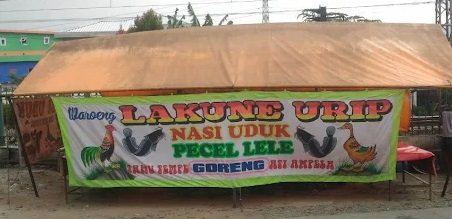
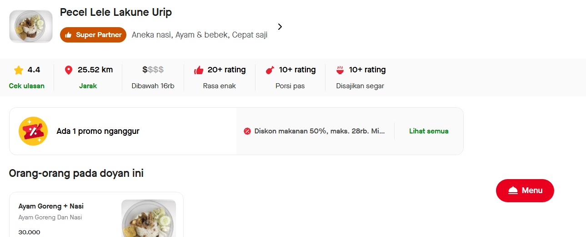

Sejarah Pecel Lele Lakoene Oerip
Pecel Lele Lakoene Urip telah berdiri sejak tahun 1999 dan sejak itu
menjadi salah satu warung pecel lele yang paling dikenal di daerah
ini. Dengan resep turun-temurun dan bahan-bahan segar pilihan,
Lakoene Urip berhasil mempertahankan cita rasa khas yang lezat dan
autentik. Seiring waktu, warung ini terus berkembang dan menjadi
favorit banyak pelanggan yang mencari sensasi makan pecel lele yang
nikmat dan harga terjangkau.

Keistimewaan
Di Lakoene Urip, kami percaya bahwa setiap hidangan bukan hanya soal
rasa, tetapi juga tentang pengalaman yang menyentuh hati dan
memuaskan selera. Keistimewaan kami terletak pada proses pengolahan
yang teliti, bahan-bahan berkualitas tinggi, serta sentuhan
tradisional yang autentik. Setiap elemen dalam menu kami dirancang
untuk memberikan kenikmatan maksimal dan menghadirkan cita rasa khas
yang sulit ditemukan di tempat lain. Berikut adalah beberapa aspek
yang membuat Lakoene Urip menjadi pilihan istimewa bagi para pecinta
pecel lele dan kuliner Nusantara.
Pengolahan
Pengolahan pecel lele di Lakoene Urip dilakukan dengan sangat
teliti dan higienis. Ikan lele segar dipilih setiap hari, kemudian
dibersihkan dan dibumbui dengan rempah-rempah khas sebelum
digoreng hingga renyah di luar namun tetap lembut di dalam. Sambal
yang disajikan juga dibuat secara tradisional dengan bahan-bahan
alami, memberikan rasa pedas yang pas dan menggugah selera. Proses
pengolahan ini memastikan setiap piring pecel lele yang disajikan
memiliki kualitas terbaik.

Sudah Bisa Didapatkan Online dan Transaksi Menggunakan QRIS
Untuk memudahkan pelanggan, Lakoene Urip kini sudah tersedia
secara online melalui berbagai platform pemesanan makanan. Kamu
bisa dengan mudah memesan pecel lele favoritmu kapan saja dan di
mana saja. Selain itu, pembayaran juga semakin praktis dengan
dukungan transaksi menggunakan QRIS, sehingga kamu tidak perlu
repot membawa uang tunai. Layanan ini memberikan kemudahan dan
kenyamanan bagi pelanggan setia Lakoene Urip.
